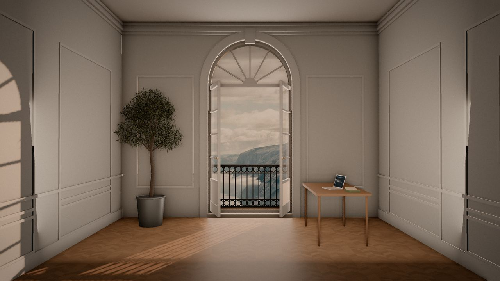
I build software that pays for itself.
Vision
Zinc roofs and fjord granite share one colour: silver. The site is a single, calm room with tall boiserie walls and a chevron oak floor, and one arched window that opens onto a fjord. Light crosses the floor as the day passes; the camera makes one slow walk to the window. The products sit on the sill.
Hero imagery · baked from the room (three.js, GTAO, AgX tone mapping) and finished by hand
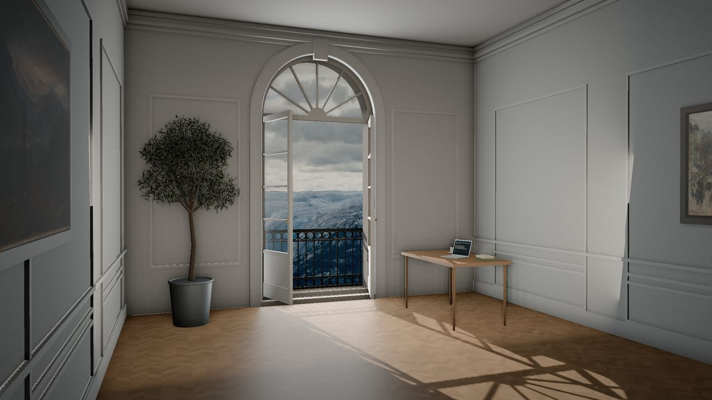
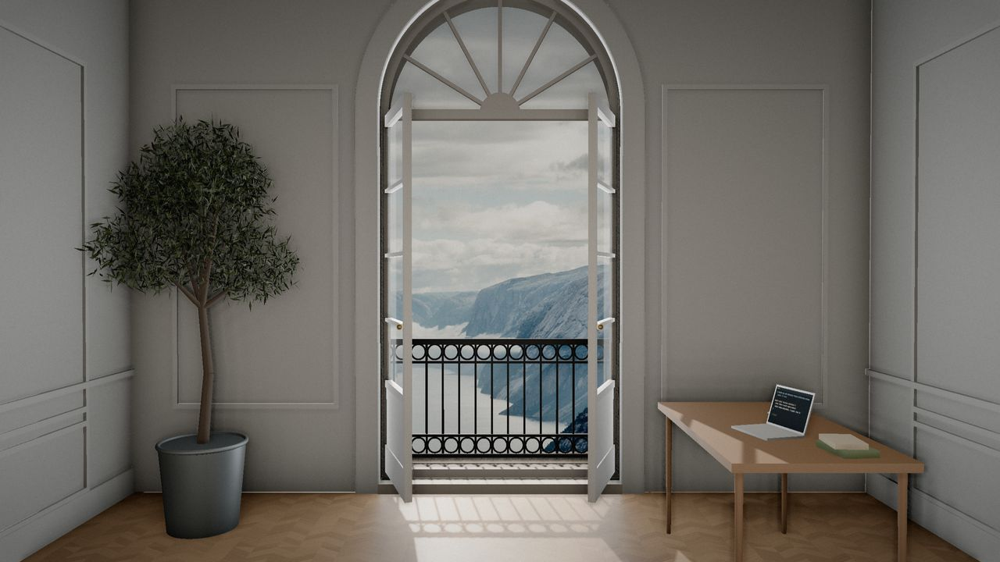
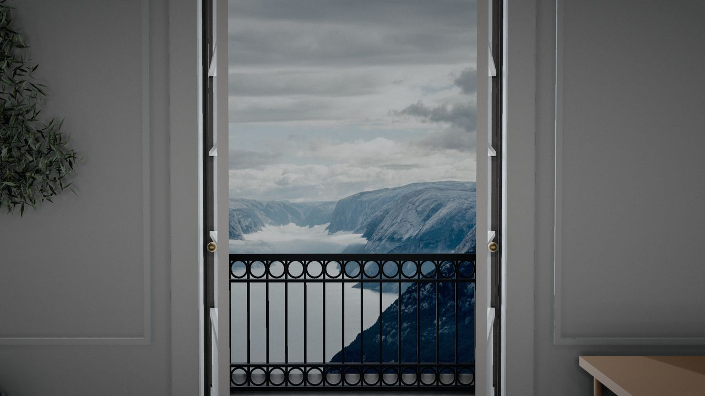
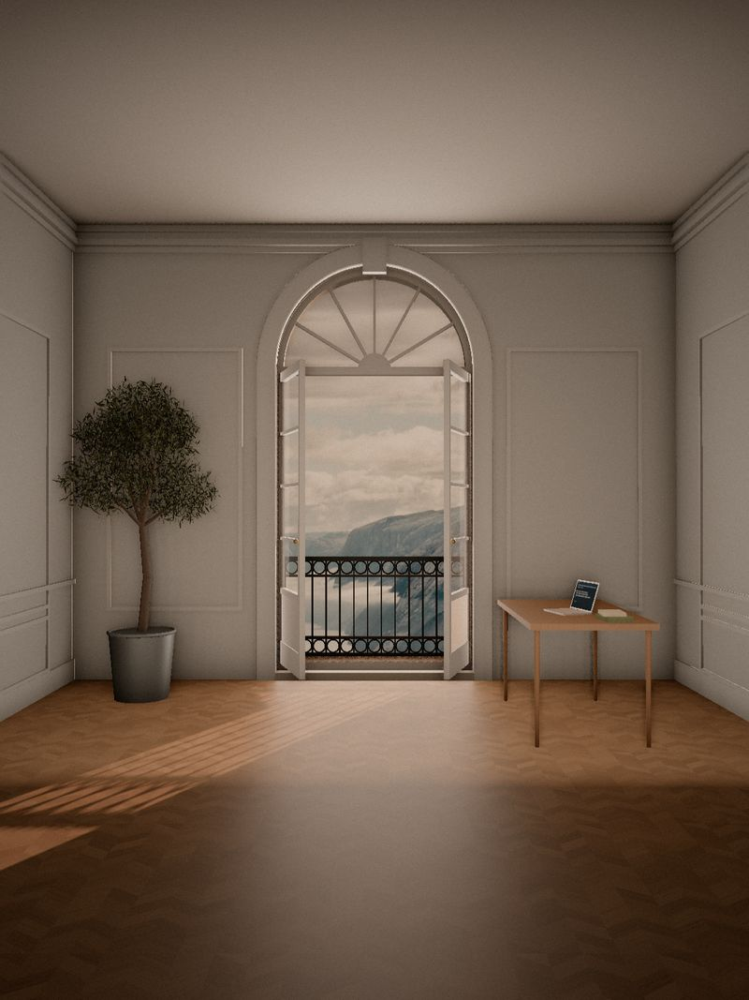
Palette · fjord: granite, glacier blue, snow, moss · plus Paris stone and evening light
Type · Bodoni Moda (didone, optical sizes 6–96) with italic accents · Instrument Sans for labels
Body may run in Bodoni Moda at its small optical size, where the hairlines thicken for reading: MCP Emails gives AI agents an inbox, with 17 tools across about 100 email providers. Numerals 0123456789 and æøå ÆØÅ.
Aa Bb Cc · display 500 / opsz 96 · italic 400 · text 400 / opsz 11 · labels Instrument Sans 600, tracking .22em, caps
Identity · the mark is the window: a round-headed French window, open onto a ridge
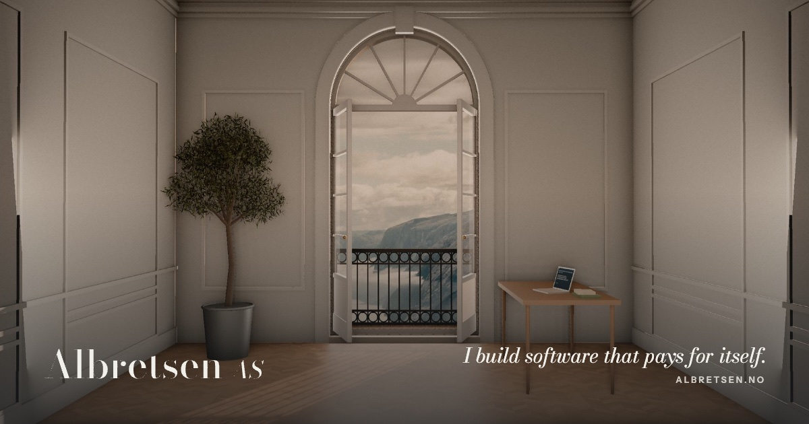
Products · real logos, unchanged, on cotton cards standing on the limestone sill
Retired · perforated stamps; Luma keeps its real monogram
Extras · the zinc and the granite, two paintings, textures, architectural details
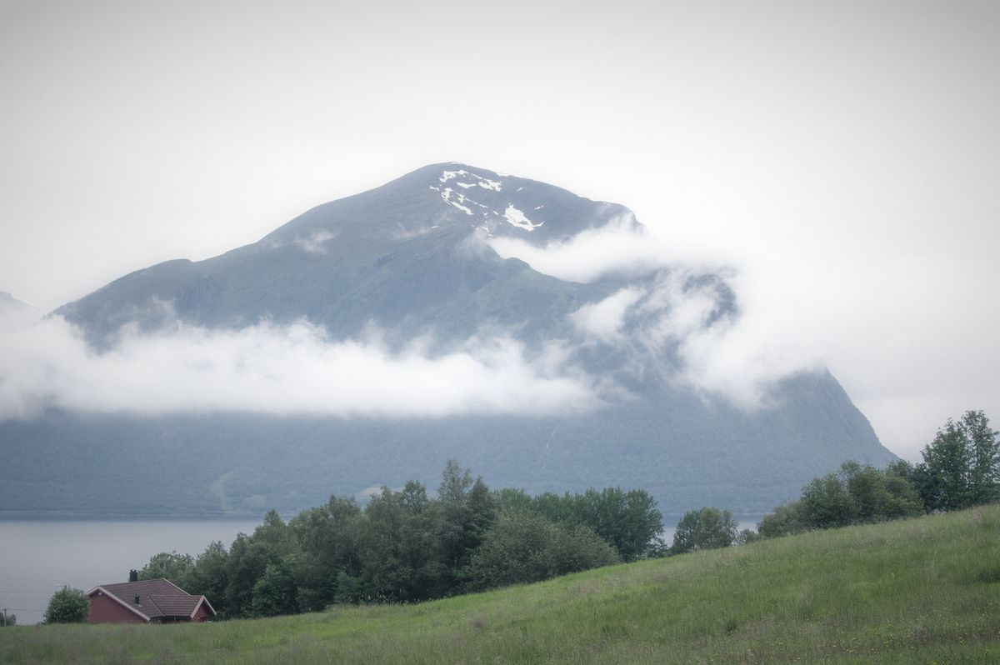
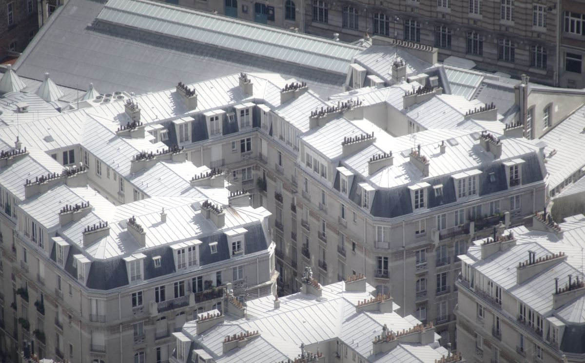
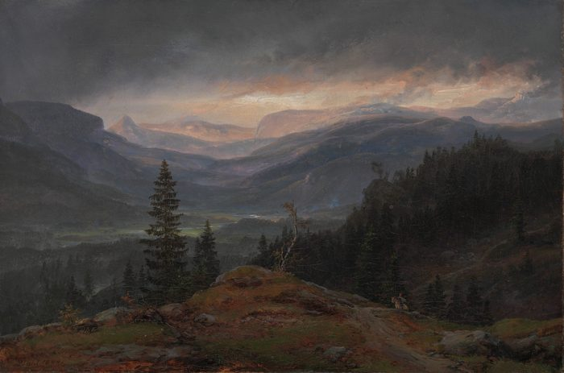
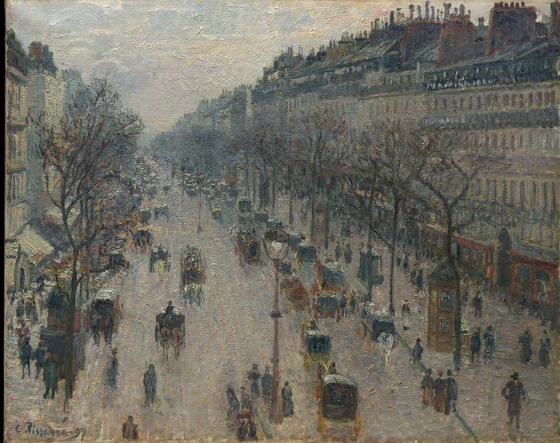
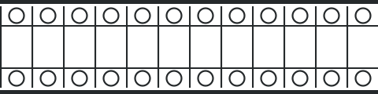
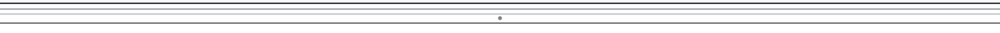
Interactive · room/room.js (three.js 0.169) · drag the day, walk to the window
Motion study · motion.css + motion.js + cursor.js
One camera move for the whole page, scroll-linked, damped, never cut. Scroll inside the frame.
Images open like a pair of French windows as they enter the view.
A patch of arched window light crosses the section, silver at first, gold by the end.
A word turns to its italic on hover, the only flourish the type ever makes.
The signature delight: a small arched window trails the pointer on a soft spring; over a link its fanlight fills with stone-coloured light, over an image it widens into a pane.